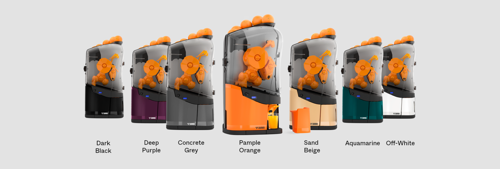
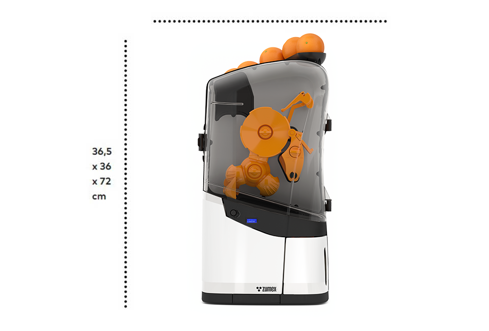

Citrusové odšťavňovače
Minex
Velká čerstvost pro malé podniky.
Pro menší kavárny a provozy, které chtějí nabídnout čerstvou pomerančovou šťávu bez velkých nároků na prostor. Jednoduché ovládání a kompaktní provedení pro každodenní obsluhu.
Poptat tento produktCenu a dostupnost vám potvrdíme podle konfigurace.
13 plodů/minVýkon
6–7 plodůPodavač
65–78 mmPrůměr ovoce
Navržen pro váš provoz.
Minex je automatický pomerančový lis pro provozy s mírnější spotřebou: malé kavárny, pekárny i hotelové snídaně. Ovoce postupně vkládáte do podavače a šťávu podáváte čerstvou přímo hostovi.
Můžete pracovat se samoobslužným kohoutkem nebo integrovanou 750ml konvičkou. Menší zásobník se hodí pro přípravu na objednávku. Sedm barevných provedení umožňuje sladit stroj s interiérem; systém Original System a technologie ASP jsou součástí konstrukce.
Přehledná obsluha přímo na baru.
Barevná provedení pro sladění s interiérem.



CO ZPRACUJE
Suroviny pro Minex
Minex je automatický lis na pomeranče pro provozy s mírnější spotřebou. Ideální pro:
- Pomeranče
- Průměr pomerančů
- 65–78 mm
VYBERTE SI PROVEDENÍ
Jedna řada. Vaše konfigurace.
Minex
Vhodný zejména pro pomeranče uvedeného průměru. Při výběru prostoru počítejte s přístupem k podavači i s vyjmutím dílů pro pravidelné čištění.
Poptat variantuFotografie jsou ilustrační pro danou řadu. Výbava a technické parametry se mohou lišit podle varianty.
KOLIK MÍSTA POTŘEBUJE
Rozměry
Lis
- Výška712 mm
- Šířka383 mm
- Hloubka368 mm
- Hmotnost19,5 kg
Údaje výrobce. Přesné rozměry pro vaši konfiguraci rádi ověříme.
Výška
712 mm
712 mm
Šířka 383 mm
Barvy
7 barev, které zapadnou do každého prostředí
- Pample Orange
- Deep Purple
- Aquamarine
- Sand Beige
- Off-White
- Concrete Grey
- Dark Black
Barevné odstíny na obrazovce jsou orientační. Vzorník vám rádi ukážeme.
PODROBNĚ A PŘEHLEDNĚ
Technické parametry.
- Výkon
- 13 pomerančů/min
- Zásobník
- 6–7 plodů
- Průměr pomerančů
- 65–78 mm
- Rozměry (š × h × v)
- 383 × 368 × 712 mm
- Hmotnost
- 19,5 kg
- Konvička
- 750 ml
- Obsluha
- Kohoutek nebo konvička
- Barvy
- 7 provedení (viz Barvy)
- Krytí
- IPX0
- Jazyky nastavení
- 23
- Typ provozu
- Mírný
- Výdej
- Samoobslužný kohoutek proti odkapávání, volitelně se zámkem, nebo konvička 750 ml
- Příkon
- 50 W | 0,07 HP
- Napájení
- 220–240 V, 50–60 Hz / 100–240 V, 50–60 Hz
- Spotřeba proudu
- 0,2 A / 0,45 A
- Bezpečnost
- 3 bezpečnostní prvky a snímač zablokování motoru
Údaje výrobce pro uvedené provedení. Výkon závisí na surovině a konfiguraci. Zdroj: Zumex ↗
Co zvážit při výběru
Vhodný zejména pro pomeranče uvedeného průměru. Při výběru prostoru počítejte s přístupem k podavači i s vyjmutím dílů pro pravidelné čištění.
Probrat vhodnou konfiguraci ↗CO UVNITŘ DĚLÁ ROZDÍL
Technologie a výbava.
Original System
Nová generace lisovacího systému, vylepšená v každém dílu pro maximální výtěžnost a kvalitu šťávy.
Antibakteriální nanotechnologie ASP
Technologie na bázi iontů stříbra s certifikací potravinové hygieny.
VŠE PODSTATNÉ PO RUCE
Technické podklady.
Podrobnosti, dostupné příslušenství a materiály výrobce.